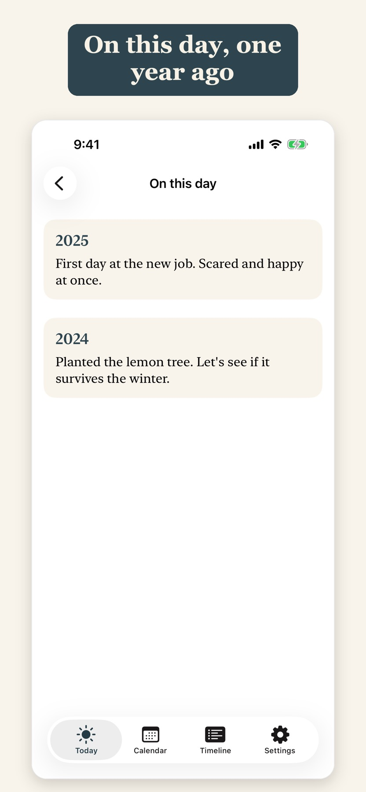
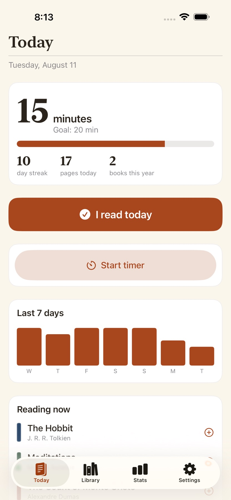
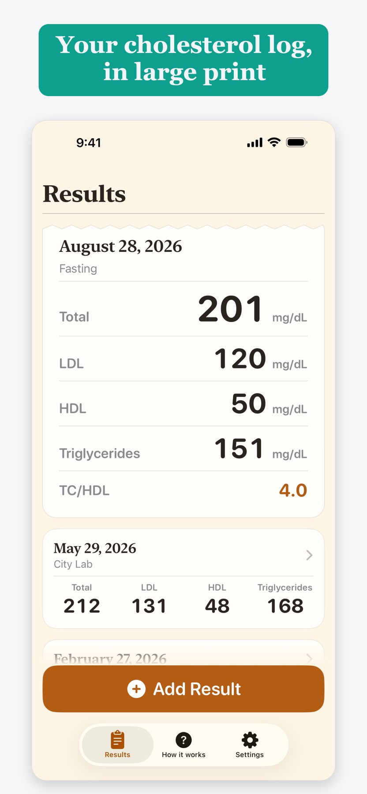
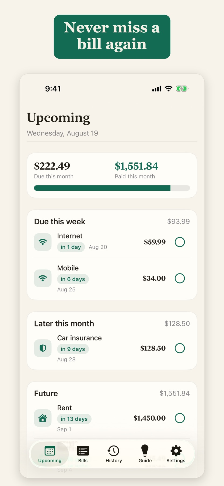
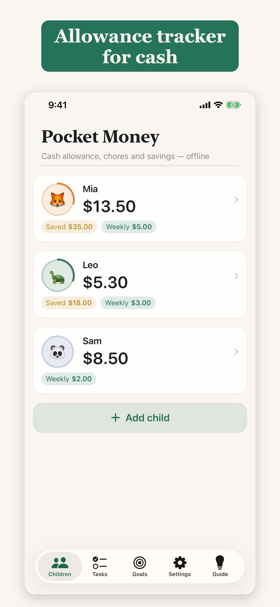

DAYLINE
A sentence today.
A story over time.
A private one-line journal.
For a lifetime of little moments.


INDEPENDENT APPS. MADE FOR IPHONE.
For the things you make. The moments you keep.
And everything that makes a day yours.
DAYLINE
A private one-line journal.
For a lifetime of little moments.

LUCIDA CAM
Your reference on screen.
Your drawing on real paper.


14 APPS. ONE SIMPLE IDEA.
Find the one
that feels like you.
Showing 14 apps
Everyday
One line a day. The same date, year after year. A private journal for the moments you want to keep.
DiscoverCreative
See your reference over the live camera view. Look at the screen, and draw on real paper.
DiscoverCreative
Print photos, craft templates and posters at the dimensions you choose. Millimetres, centimetres or inches.
Discover
Everyday
Turn mornings, homework and bedtime into visual steps. One clear timer at a time.
Discover
Everyday
Keep your books, reading minutes and progress together. Make a one-page report for school.
Discover
Health
A blood pressure journal with large numbers. Record systolic, diastolic and pulse, then share your history.
Discover
Health
Log blood sugar in large, readable numbers. Tag readings around meals and keep a history for your doctor.
Discover
Health
Keep Total, LDL, HDL and Triglycerides together. Large print, your units, and a report to share.
Discover
Health
Record each hot flash when it happens. Keep symptoms, intensity and day-and-night history in one private log.
Discover
Health
Keep a record of medicines, doses, injection sites, weight and side effects. See when your next shot is due.
Discover
Money
Enter an amount. Pick a category. Keep a clear monthly spending record without connecting your bank.
Discover
Money
Enter a bill once. Get reminders, mark it paid, and let the next due date take its place.
Discover
Money
Compare debt snowball and avalanche plans using your balances, rates and payments. See the path month by month.
Discover
Money
Keep track of cash allowance, chores and savings goals for your kids. No bank cards or accounts to connect.
Discover
A DIFFERENT KIND OF APP
Your journal, health records and finances belong to you. These apps keep their records on your iPhone, without an account or a cloud server.
No monthly renewal to remember. Each app offers a one-time purchase, with free features or a trial where described on its page.
Tools for a specific part of your day. Open the app, do what you came to do, and get back to everything else.
GOOD TO KNOW
Ihor Romanenko, an independent developer. All 14 apps on this site link to their public Apple App Store listings.
No. These apps work without creating an account. Their records and projects are stored on your iPhone.
No. Each app uses a one-time purchase. Free features and trial limits differ by app; see its page and the current App Store listing.
Yes. The core tools and local records work offline. Downloading an app, purchasing an unlock, and services such as AirPrint have their own connectivity requirements.
No. They are personal journals for readings, symptoms or medicines you enter yourself. They do not measure health values, diagnose conditions or replace professional medical advice.
Open an app’s App Store listing and follow its App Support link for the support details published for that app.
A LITTLE SIMPLER, EVERY DAY